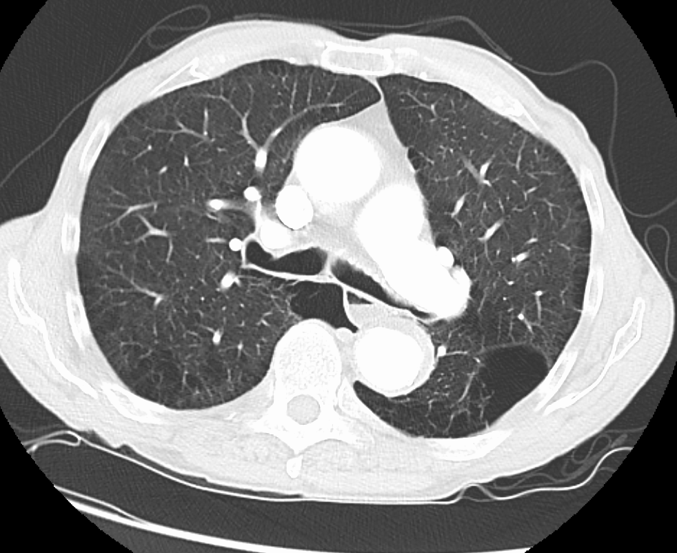

Ficha del catálogo
Hipertensión pulmonar
- Sistema
- Respiratorio
- Modalidad
- TC
- Región
- Tórax
- Dificultad
- Avanzado
Elevación mantenida de la presión en la circulación pulmonar que puede deberse a enfermedad vascular primaria, a cardiopatía izquierda, a enfermedad pulmonar crónica o a tromboembolia crónica. Cursa con disnea de esfuerzo progresiva y signos de fallo derecho. La imagen orienta la causa y valora las repercusiones sobre el corazón derecho.
Técnica
Tomografía de tórax con contraste, valorando el calibre de la arteria pulmonar y las cámaras derechas. El ecocardiograma es la técnica de cribado inicial.
Qué observar
- Dilatación del tronco de la arteria pulmonar con calibre mayor que el de la aorta ascendente
- Aumento del cociente entre arteria pulmonar y aorta como signo indirecto
- Dilatación del ventrículo y de la aurícula derechos con abombamiento del tabique
- Afilamiento brusco de las ramas arteriales periféricas
- Signos de la causa subyacente, como enfisema, fibrosis o defectos crónicos de repleción
- Reflujo de contraste hacia la vena cava inferior y venas suprahepáticas
Hallazgos
Arteria pulmonar principal dilatada con cámaras derechas aumentadas de tamaño y hallazgos asociados que orientan hacia la causa.
Perlas
Cuando el tronco de la arteria pulmonar es más ancho que la aorta ascendente en el mismo corte, la sospecha de hipertensión pulmonar es alta. El reflujo de contraste a la cava inferior es un signo sencillo de fallo derecho.
Diagnóstico diferencial
- Tromboembolia pulmonar crónica
- Defectos excéntricos, bandas intraluminales y perfusión en mosaico.
- Cardiopatía izquierda avanzada
- Aurícula izquierda dilatada con congestión venosa pulmonar.
- Enfermedad pulmonar crónica
- Enfisema o fibrosis extensos que justifican la hipertensión.
Simuladores
- Dilatación idiopática de la arteria pulmonar
- Artefacto de mezcla de contraste
- Cardiomegalia global de otra causa
Por modalidad
- US
- Ecocardiograma como método de cribado y estimación de presiones
- TC
- Valora calibre arterial, cámaras derechas y causas pulmonares
- RM
- Cuantifica la función del ventrículo derecho
Protocolo
Tomografía con contraste en fase arterial pulmonar y reconstrucciones multiplanares que permitan medir la arteria pulmonar a nivel de su bifurcación.
Clasificación
La hipertensión pulmonar se agrupa clínicamente según su mecanismo en arterial, por cardiopatía izquierda, por enfermedad pulmonar o hipoxemia, tromboembólica crónica y de mecanismos múltiples.
Errores frecuentes
- Medir la arteria pulmonar en un plano inadecuado
- No buscar signos de causa tromboembólica crónica
- Ignorar los signos de fallo derecho al centrarse solo en el parénquima

hipertension pulmonar arteria pulmonar ventriculo derecho cor pulmonale mosaico disnea